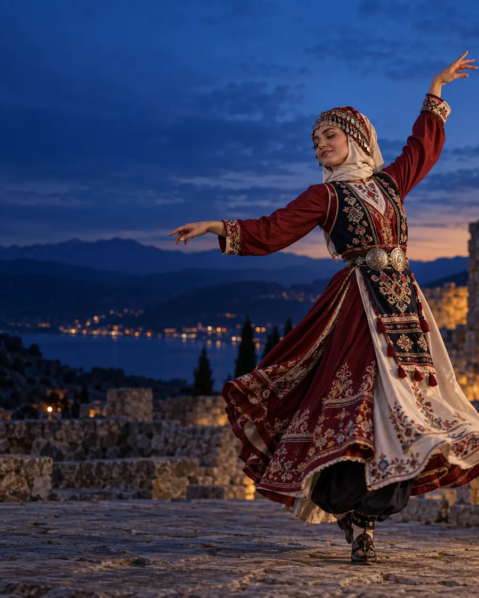
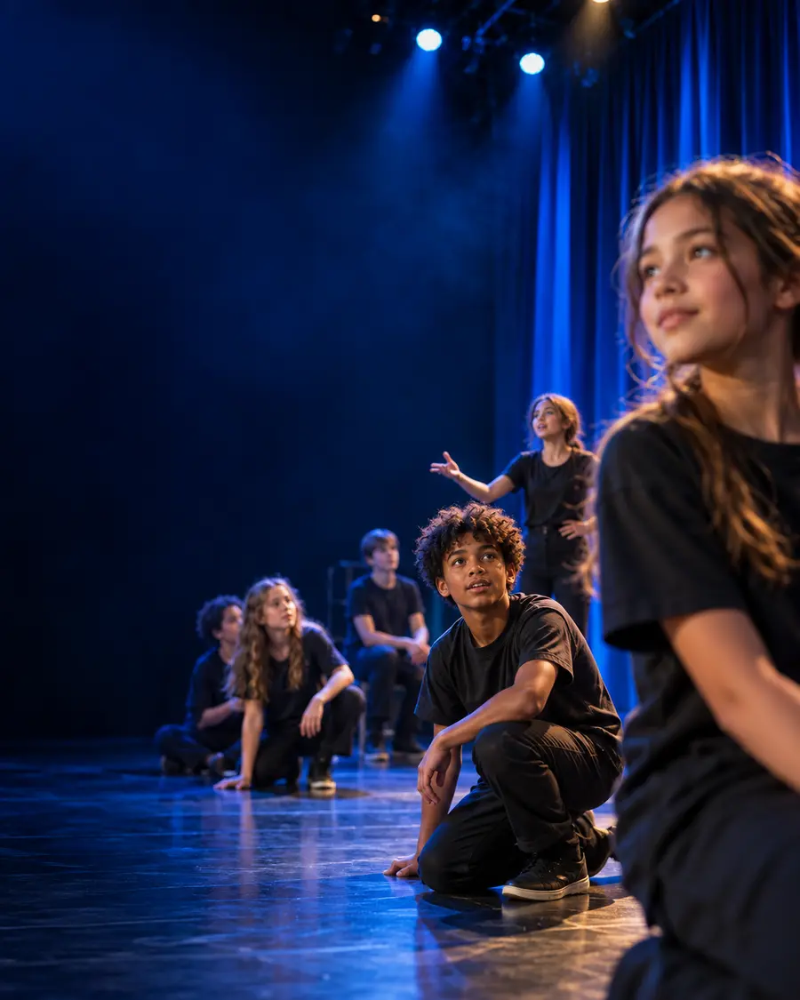
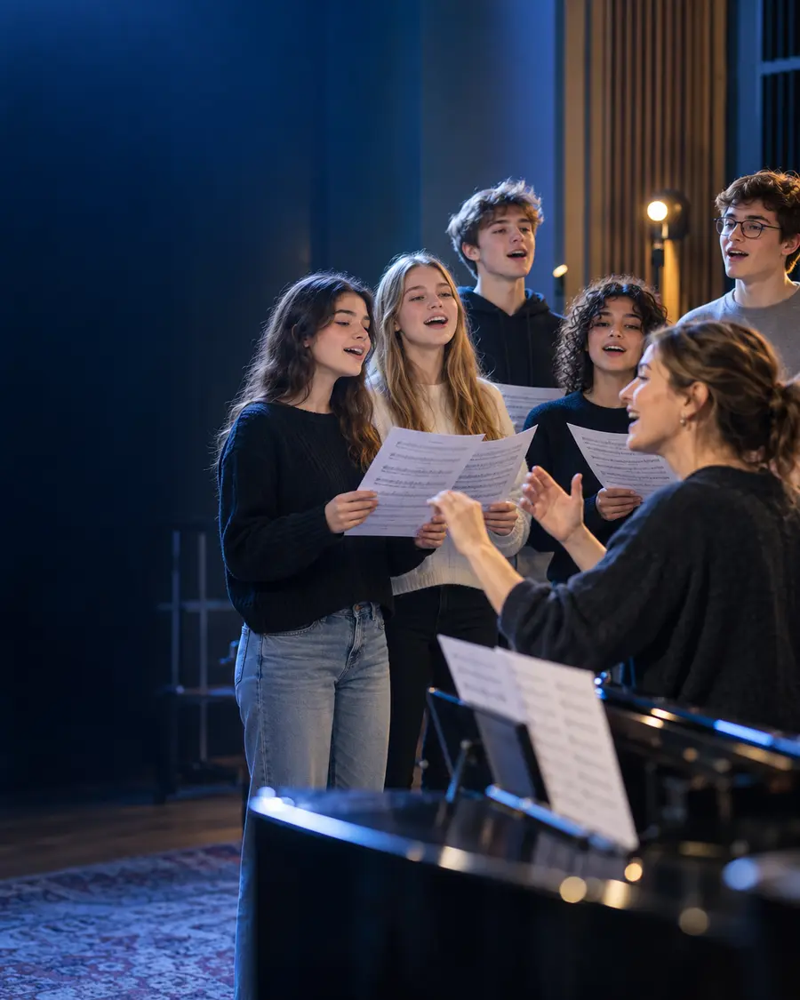

NOVA PERFORMANS SANATLARI VE SPOR GELİŞİM MERKEZİ
Kültürümüz,
sahnede yaşar.
Türk halk oyunlarının ritmiyle öğrencilerimizin yeteneğini, özgüvenini ve aidiyetini büyütüyoruz.
Bilgi Al →
NOVA AKADEMİ
Vizyon Proje
Öğrenci
Şehirde Eğitim
Kampüs Okul
NOVA AKADEMİ
NOVA ile her yetenek, kendi sahnesini bulur.
01 · KÜLTÜR
02 · PERFORMANS
04 · GELİŞİM
HABERLER & DUYURULAR
NOVA Akademi'nin yürüttüğü çalışmalar, projeler ve tüm güncel duyurular burada sizlerle buluşuyor.

NOVA Akademi olarak kültürel mirasımızın genç nesiller tarafından yaşatılması için çalışmalarımız devam ediyor.
Detayları İncele →
Yeni dönem eğitim programlarımız için kayıt başvuruları alınmaya başlanmıştır.
Detayları İncele →
Öğrencilerimizin hazırladığı halk oyunları gösterisi, izleyicilerden büyük beğeni topladı.
Detayları İncele →
Anadolu'nun kültürel değerlerini kayıt altına alan araştırma projemiz yeni etaplarıyla sürüyor.
Detayları İncele →NOVA AKADEMİ
NOVA; performans sanatları, spor ve kişisel gelişimi aynı çatı altında buluşturan yeni nesil bir gelişim merkezidir.
Çocuklar ve gençler, alanında uzman eğitmenlerle yeteneklerini keşfeder; hedeflerine planlı, keyifli ve güvenli bir yolculukla ulaşır.
Bizi Tanıyın →EĞİTİM PROGRAMLARI
NOVA YAKLAŞIMI
NOVA PROJELERİ
Yıl boyunca emek veren öğrencilerin sahne deneyimini büyüten performans buluşmaları.
Detaylı Bilgi ↗Sporun disiplinini, dayanışmayı ve oyun ruhunu bir araya getiren gelişim programı.
Detaylı Bilgi ↗Tatil dönemlerinde sanat, hareket ve üretimle dolu yoğunlaştırılmış atölyeler.
Detaylı Bilgi ↗AKADEMİ NOTLARI
BİRLİKTE BAŞLAYALIM